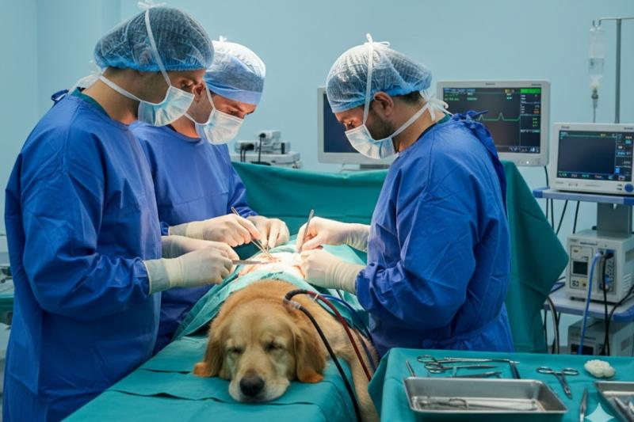
Surgery & Medical Treatment
Safe and advanced surgical care with expert monitoring.
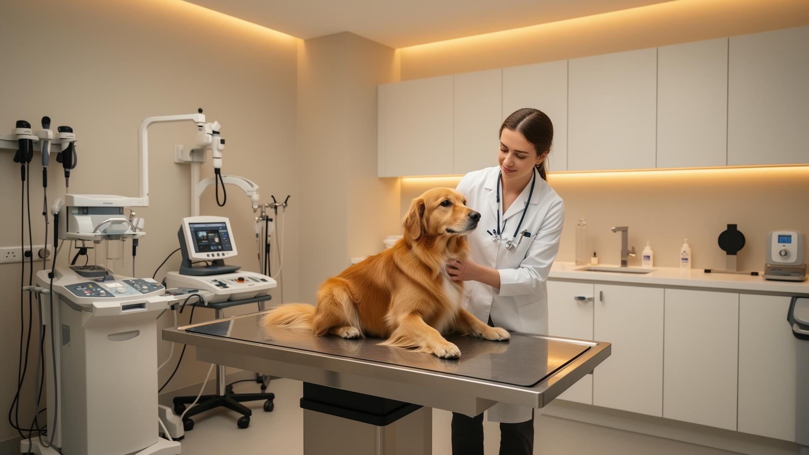
Complete, compassionate care for every stage of your pet’s life.
A full range of veterinary services to keep your pets healthy, safe and happy at every stage of life.
Explore All ServicesAdvanced veterinary solutions for your pet’s specific health, comfort and lifestyle needs.
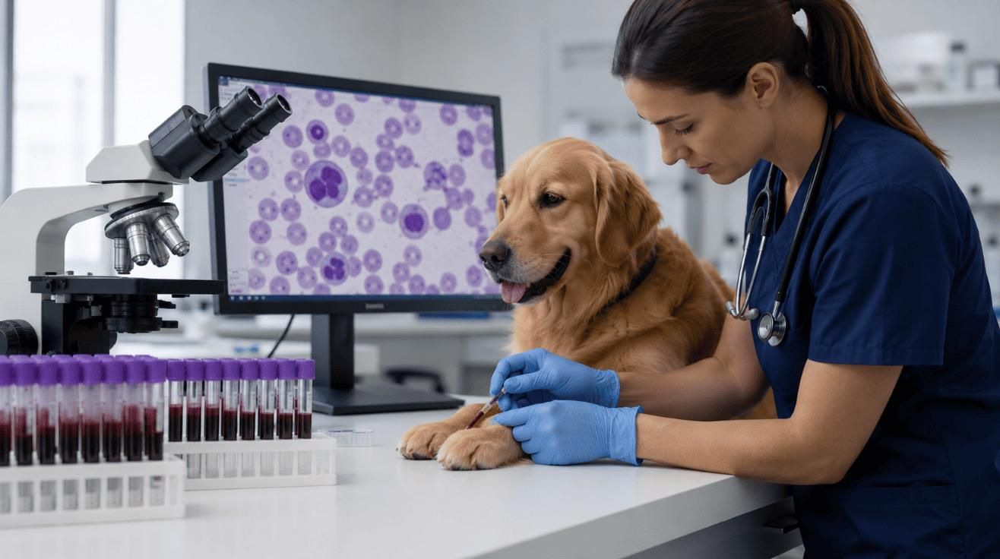
Accurate and timely tests to detect, monitor and treat health issues early.
Learn More
Safe and advanced surgical care with expert monitoring.
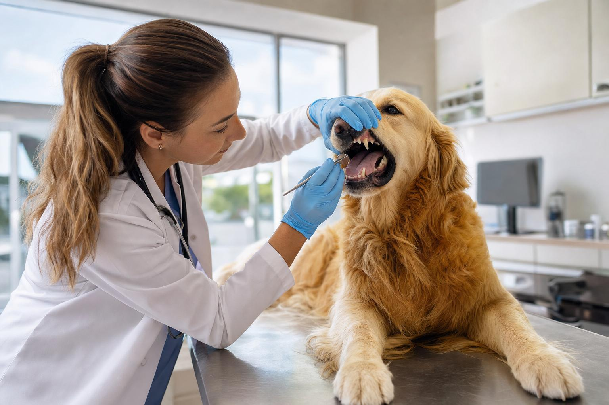
Keep your pet’s teeth and gums healthy and pain-free.
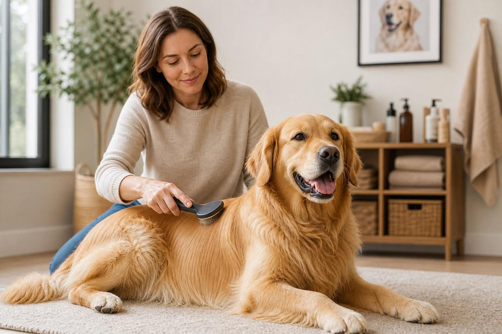
Professional grooming for a clean, healthy and happy pet.

Personalized diet and wellness plans for long-term health.
At PawsHeal, we combine expert veterinary care, advanced facilities and a compassionate approach to keep your pets healthy and happy.
Book an Appointment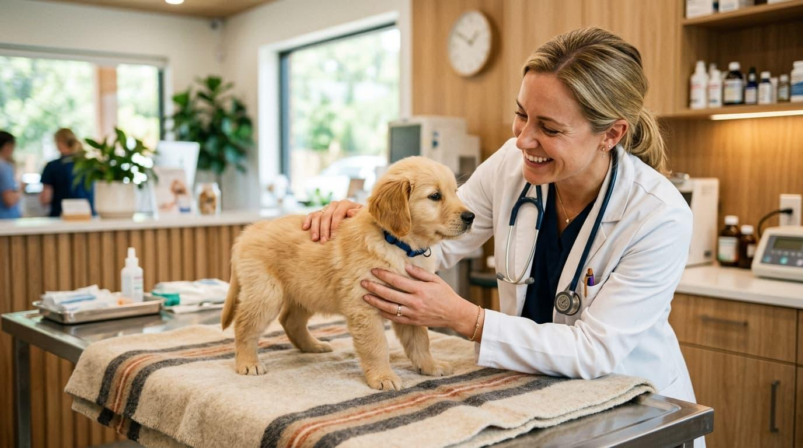
A skilled and caring team dedicated to your pet’s lifelong health.
Advanced tools for accurate, timely and reliable diagnosis.
Tailored care based on your pet’s unique needs, age and health condition.
A safe, stress-free and welcoming space for happier, healthier pets.
Reliable, safe and quality treatment.
Clean, well-equipped and pet-friendly.
Compassion, comfort and care in every visit.
A simple, transparent and caring process to ensure your pet gets the right treatment at every step.
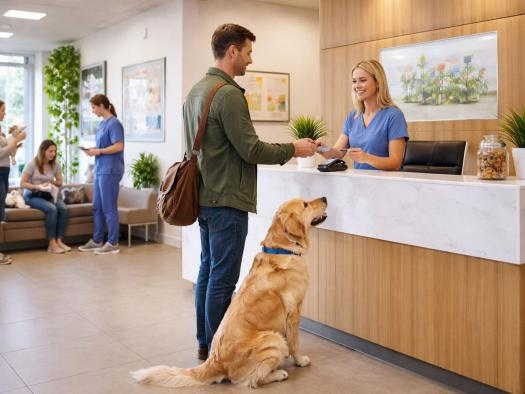
Easy and convenient appointment scheduling online or by phone.
A friendly consultation to understand your pet’s health and needs.
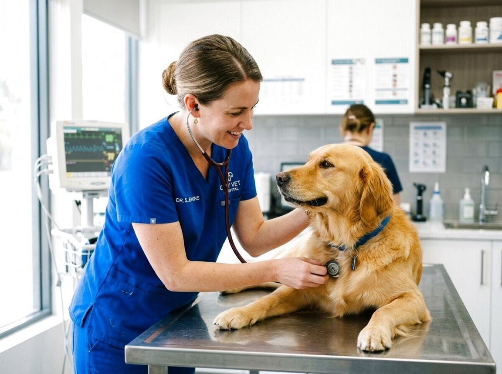
Accurate tests and a personalized treatment plan for the best care.
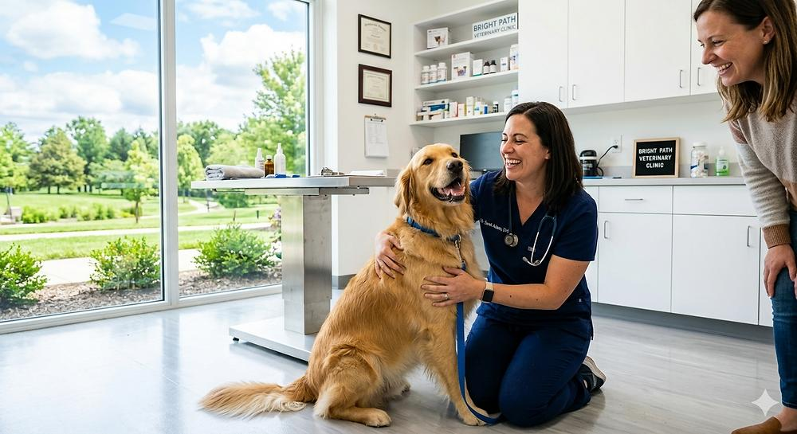
Ongoing support, recovery guidance and follow-up care for long-term health.
Helpful tips, expert advice and practical guidance to keep your furry friends healthy, happy and active.
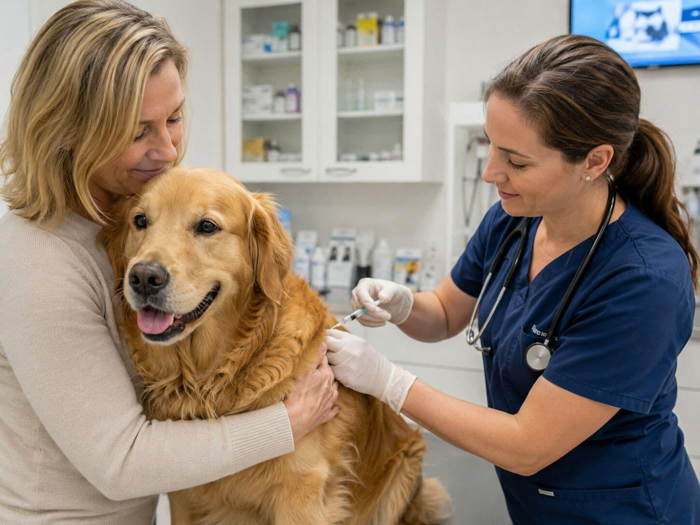
Protect your pet from common and serious diseases with timely vaccinations.
Read MoreFind quick answers to common questions about our services, treatments, appointments and your pet’s overall health.
For most healthy adult pets, a routine checkup every 6 to 12 months is a useful starting point. Puppies, kittens, senior pets and pets with ongoing health concerns may need more frequent visits. Your veterinarian can recommend a suitable schedule.
Vaccination needs depend on your pet’s species, age, health, lifestyle and local disease risks. Our veterinary team can review your pet’s vaccination history and suggest an appropriate vaccination schedule.
Regular dental examinations help identify plaque, gum problems and other oral health concerns. Schedule a checkup if you notice bad breath, difficulty eating, bleeding gums or changes in your pet’s teeth.
Bring any previous medical records, vaccination details, current medication information and relevant health history. Keeping your pet safely secured during travel will also help make the visit more comfortable.
Please contact our clinic directly to confirm emergency availability and operating hours. For urgent symptoms such as breathing difficulties, severe bleeding or collapse, seek immediate veterinary attention.
You can contact PawsHeal through the clinic’s phone number or use the appointment booking option on our website. Please share your pet’s details and preferred appointment time.
Book a visit with our caring veterinary team and give your furry friend the attention and professional care they deserve.
Book an Appointment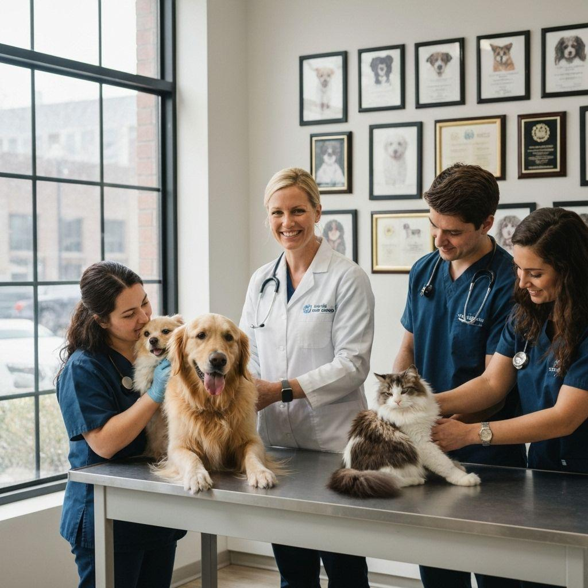